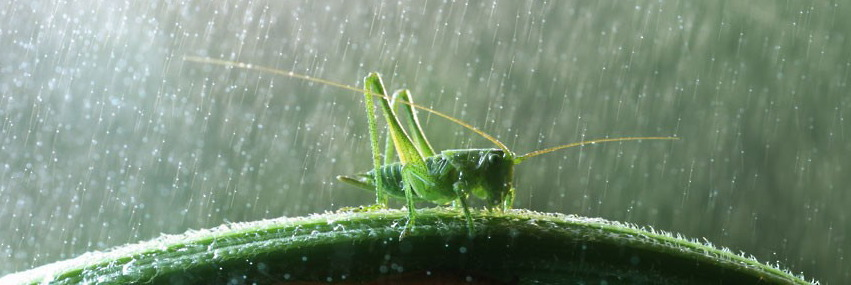

การวิจัยในปัจจุบันเน้นไปที่กลศาสตร์ของของไหลเมื่อหยดน้ำฝนกระทบกับโครงสร้างภายนอกของตั๊กแตน นักวิทยาศาสตร์สังเกตว่าพลังงานจลน์ของหยดน้ำส่งผลต่อการทรงตัวของแมลงอย่างไร และการเคลือบผิวตามธรรมชาติช่วยลดแรงกระแทกเพื่อป้องกันการบาดเจ็บระหว่างพายุฝนได้อย่างไร